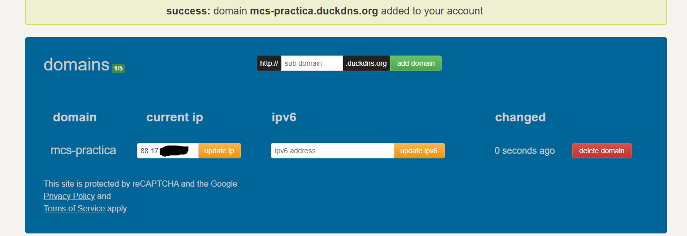
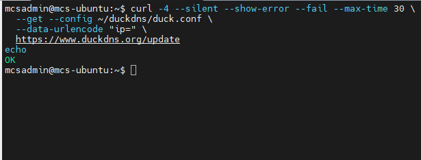
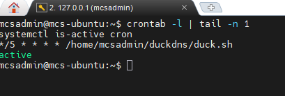
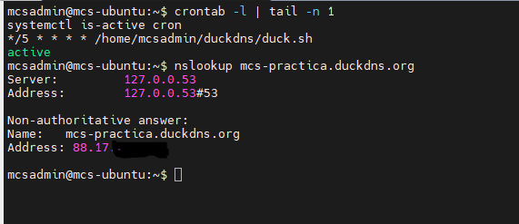
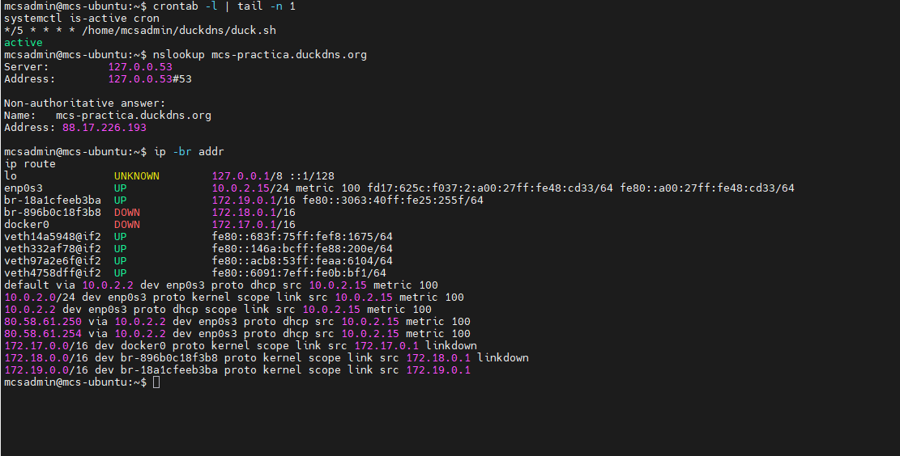
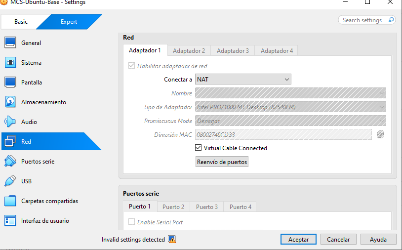
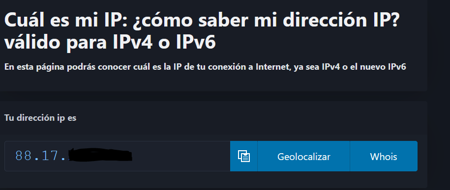

1. ¿Qué diferencia existe entre DNS y DDNS?
DNS relaciona un nombre con una IP. DDNS mantiene esa relación actualizada cuando la IP cambia.
Configuración de DuckDNS desde Ubuntu, comprobación del dominio y análisis del acceso remoto. La práctica combina pruebas realizadas, resultados y una consulta WAN simulada.
Accedí a DuckDNS , inicié sesión mediante una de sus opciones de acceso y añadí el subdominio mcs-practica .
El nombre completo es
mcs-practica.duckdns.org
. La cuenta permite gestionar el dominio y su token permite autenticar las peticiones de actualización.
Guardé el token en un archivo protegido de Ubuntu. En las capturas no se muestran el token ni las credenciales; la IP pública está parcialmente oculta.

Utilicé Ubuntu dentro de VirtualBox como cliente de actualización. El cliente envía una petición HTTPS a DuckDNS para mantener el dominio apuntando a la IPv4 pública.
cat /etc/os-release
sudo apt update
sudo apt install curl dnsutils cron
curl
envía la actualización;
dnsutils
incluye las herramientas de consulta DNS y
cron
permite programar la tarea.
mkdir -p ~/duckdns
chmod 700 ~/duckdns
nano ~/duckdns/duck.conf
Inicialmente guardé estas dos líneas.
TU_TOKEN
representa el token privado y no es su valor real.
domains = "mcs-practica"
token = "TU_TOKEN"chmod 600 ~/duckdns/duck.conf
El permiso
700
limita el acceso a la carpeta a mi usuario. El permiso
600
permite que solo mi usuario lea y modifique la configuración.
Adapté el archivo al formato de configuración de
curl
, conservando el token sin mostrarlo:
sed -i 's/^domains = "/data-urlencode = "domains=/; s/^token = "/data-urlencode = "token=/' ~/duckdns/duck.confEl archivo queda con este formato:
data-urlencode = "domains=mcs-practica"
data-urlencode = "token=TU_TOKEN"curl -4 --silent --show-error --fail --max-time 30 \
--get --config ~/duckdns/duck.conf \
--data-urlencode "ip=" \
https://www.duckdns.org/update
echo
La respuesta fue
OK
: DuckDNS aceptó la actualización. El parámetro
ip
vacío permite detectar la IPv4 pública de la conexión.

nano ~/duckdns/duck.shContenido del cliente:
#!/bin/bash
umask 077
/usr/bin/curl -4 --silent --show-error --fail --max-time 30 \
--get --config "$HOME/duckdns/duck.conf" \
--data-urlencode "ip=" \
https://www.duckdns.org/update \
> "$HOME/duckdns/duck.log" 2>&1chmod 700 ~/duckdns/duck.sh
~/duckdns/duck.sh
cat ~/duckdns/duck.log
echo
La prueba del cliente también devolvió
OK
. El resultado se guarda en
duck.log
.
crontab -eAñadí esta línea al crontab de mi usuario:
*/5 * * * * /home/mcsadmin/duckdns/duck.shsudo systemctl enable --now cron
crontab -l | tail -n 1
systemctl is-active cronLa tarea quedó programada y el servicio cron activo. Las actualizaciones se ejecutan mientras la máquina virtual esté encendida. La ejecución manual está comprobada; la configuración de cron muestra la programación automática.

Consulté el dominio desde Ubuntu:
nslookup mcs-practica.duckdns.org
La dirección devuelta para el dominio coincide con la IPv4 pública observada. El campo
Server
identifica el servidor DNS que respondió; no es la IP del dominio.
También puede consultarse con
dig
:
dig mcs-practica.duckdns.org A
La comprobación realizada y documentada fue con
nslookup
.

Primero revisé las interfaces y rutas:
ip -br addr
ip routeComo también aparecían interfaces de Docker, limité la salida a la interfaz utilizada para salir a Internet:
ip -br addr show enp0s3
ip route show default| Dato | Resultado |
|---|---|
| Interfaz de Ubuntu |
enp0s3
|
| IP privada |
10.0.2.15/24
|
| Puerta de enlace de la VM |
10.0.2.2
|
| Modo de VirtualBox | NAT |
| IPv4 pública | Consultada desde el navegador de Ubuntu; coincide con DuckDNS. |
| WAN del router doméstico | No consultada en el entorno real. Se incluye un ejemplo simulado. |
| IPv6 de la interfaz |
Una dirección local ULA (
fd17:…
) y una de enlace local (
fe80:…
). No se comprobó conectividad IPv6 pública.
|


Desde el navegador de Ubuntu consulté la IPv4 pública y la comparé con DuckDNS. Las direcciones coinciden.

Se confirmó el NAT de VirtualBox. Si el router doméstico también utiliza NAT para salir a Internet, el tráfico de la VM pasa por dos traducciones. Esto no demuestra que exista CGNAT del operador.
Sin consultar la WAN del router no puede confirmarse ni descartarse CGNAT. Las IPv6 locales encontradas tampoco demuestran acceso a Internet mediante IPv6. Con una IPv6 pública, el firewall debe controlar las conexiones entrantes aunque no se utilice NAT.
Datos ficticios; esta consulta no se realizó en el router doméstico.
En el ejemplo, se accedió a
192.168.1.1
, se inició sesión y se abrió Estado/WAN. Se comparó la IPv4 WAN con la pública:
| Dirección | Valor ficticio |
|---|---|
| IPv4 WAN |
203.0.113.25
|
| IPv4 pública |
203.0.113.25
|
Al coincidir, el ejemplo no presenta indicios de CGNAT. Estos valores son de documentación y no corresponden a mi conexión.
Comparé qué queda expuesto y qué medidas aplicar en cada escenario.
| Escenario | Superficie de ataque | Medidas de seguridad |
|---|---|---|
| A. Solo DDNS | El nombre permite conocer la IP, pero no abre servicios nuevos. | Proteger la cuenta y el token. |
| B. DDNS + puerto publicado | El servicio interno queda expuesto a conexiones e intentos de ataque desde Internet. | Mantenerlo actualizado, usar autenticación segura y limitar el acceso con el firewall. |
| C. DDNS + administración remota del router | El panel del router queda expuesto. Si alguien accede, puede modificar la configuración de la red. | Desactivar la administración desde Internet y acceder mediante una VPN. |
Durante esta práctica no se abrieron puertos ni se activó la administración remota del router.
Una VPN crea una conexión cifrada entre nuestro equipo y la red privada. Después de identificarnos, podemos acceder a los recursos que tengamos autorizados.
| Elemento | Función |
|---|---|
| DDNS | Mantiene el nombre apuntando a la IP pública cuando cambia. |
| Firewall | Permite o bloquea las conexiones según las reglas configuradas. |
| VPN | Crea un túnel cifrado para acceder a la red privada. |
| Autenticación | Comprueba la identidad de quien intenta acceder. |
| NAT/CGNAT | Traducen direcciones IP. El CGNAT del operador suele dificultar las conexiones entrantes. |
DDNS ayuda a localizar el punto de acceso. La VPN cifra la conexión y el firewall limita los recursos accesibles. El acceso debe autorizarse únicamente a los usuarios y servicios necesarios.
Este apartado es un análisis teórico: no se instaló ni se probó una VPN. Una VPN alojada en casa también necesita ser alcanzable; DDNS por sí solo no resuelve CGNAT.
La disponibilidad de DDNS y los proveedores admitidos dependen del modelo y del firmware. Admitir DDNS no implica admitir DuckDNS.
| Operador | Modelo o familia | DDNS | Alternativa | Fuente |
|---|---|---|---|---|
| Movistar | Smart WiFi / HGU | Depende del modelo y firmware; hay que comprobarlo en su configuración avanzada. | Cliente DuckDNS en Ubuntu. | Manuales Movistar |
| Orange | Livebox | Orange documenta DDNS con No-IP en algunos Livebox. Revisar los proveedores del modelo concreto. | Cliente en Ubuntu si no admite DuckDNS. | Guía Livebox de Orange |
| Vodafone | Sercomm H500-s | La documentación oficial consultada no confirma el soporte DDNS ni DuckDNS de este firmware. | Cliente DuckDNS en Ubuntu. | Guías Vodafone |
Si el router no admite DuckDNS, podemos actualizarlo desde un equipo de la red, como nuestra máquina Ubuntu.
DNS relaciona un nombre con una IP. DDNS mantiene esa relación actualizada cuando la IP cambia.
No, solo mantiene el nombre apuntando a la IP actual. Para acceder necesitamos un servicio disponible y que la conexión esté permitida.
La IP privada se usa dentro de la red local. La IP pública identifica nuestra conexión en Internet.
NAT permite que varios equipos con IP privada compartan una IP pública para salir a Internet.
CGNAT hace que varios clientes compartan una IP pública y dificulta las conexiones entrantes.
El servicio queda expuesto a Internet y pueden intentar entrar aprovechando contraseñas débiles o fallos de seguridad.
Porque expone el panel del router a Internet. Si alguien entra, puede modificar la configuración de nuestra red.
Porque permite modificar la IP del dominio. Debemos protegerlo como una contraseña.
Ping comprueba si el equipo responde por ICMP, pero no si un servicio TCP está funcionando.
Una VPN protege el acceso con cifrado y autenticación, y evita publicar cada servicio en Internet.
Cerraría los puertos innecesarios, desactivaría la administración remota y mantendría los servicios actualizados. Para acceder desde fuera, usaría una VPN.
Porque podemos hacer pruebas sin afectar a la red de casa y recuperar la configuración si algo sale mal.